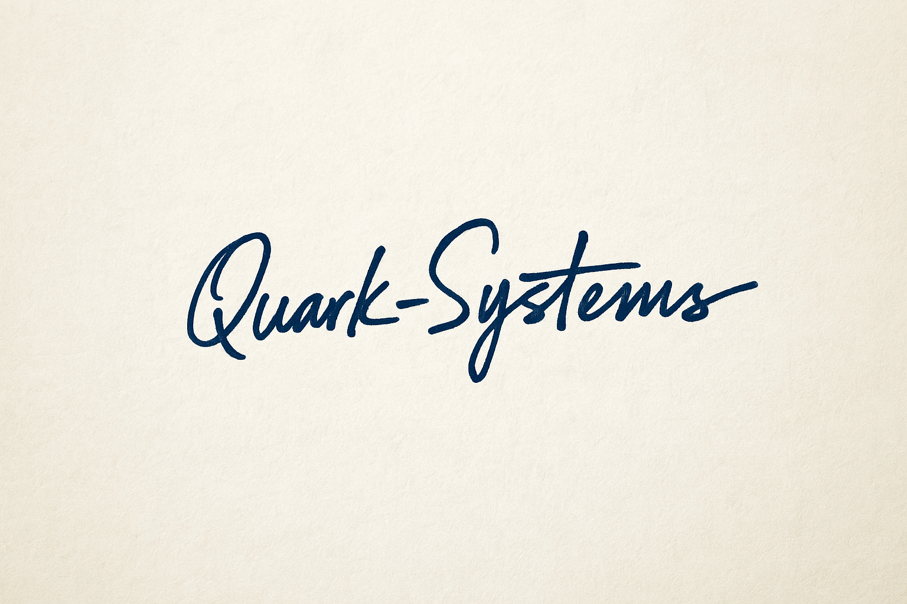

Tecnología que impulsa tu industria, soporte que te respalda.
Quark-Systems es el socio estratégico de las PYMES industriales argentinas en su proceso de transformación digital.
Nuestra misión es cerrar la brecha entre la tecnología de punta y la realidad de la industria local, ofreciendo hardware WECON de última generación, soporte técnico inmediato y resultados medibles.
Atendemos tanto a empresas industriales usuarias como a integradores de proyectos de automatización.
Nuestra experiencia técnica y gerencial nos permite alinear cada solución con los objetivos de rentabilidad y eficiencia de nuestros clientes.
Como segundo paso, ofrecemos programas de formación práctica y aplicada en automatización industrial.
Q-Academy acelera la adopción tecnológica y maximiza el valor de la inversión, complementando nuestra propuesta de hardware y soporte local.
Mg. Guillermo Espósito
Fundador & CEO
Email: guillermo.esposito@quark-systems.com.ar
Celular: (0341) 659-4559
Web: www.quark-systems.com.ar
Oficina Principal: Cordón Industrial San Lorenzo, Santa Fe, Argentina
